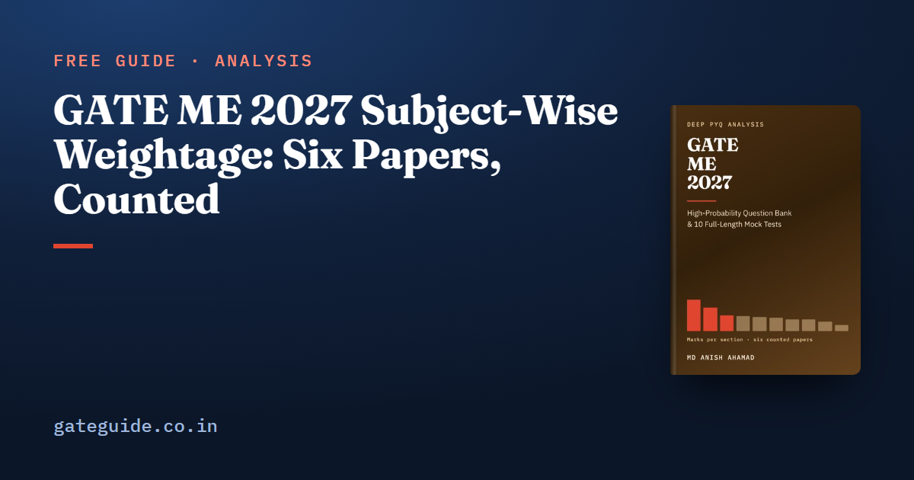

GATE ME 2027 Subject-Wise Weightage: Six Papers, Counted

Across the six GATE Mechanical Engineering papers from 2022 to 2026 — both 2022 sets and one paper in each later year, 390 questions and 600 marks — Materials, Manufacturing and Metrology is the largest technical section at a mean of 17.4 marks. Engineering Mathematics is exactly 13 in every paper, and General Aptitude exactly 15.
In this guide
Every mean below is printed beside its range, because in Mechanical the range is often the more useful number. One paper in particular, 2023, redrew the technical marks so sharply that any table without ranges hides it.
Key takeaways
- Six papers were counted question by question against their official answer keys. Each closes at 65 questions and 100 marks: 30 one-mark and 35 two-mark questions, General Aptitude at 15, technical sections at 85.
- 2022 was set as two papers and every later year as one, so the two 2022 sets are averaged first and each year counts once.
- Materials, Manufacturing and Metrology (17.4, range 14 to 21) leads in every paper. Engineering Mathematics never moved from 13.
- Mechanics of Materials averages 8.4 but ran from 6 to 15. Industrial Engineering and Theory of Machines and Vibrations have each fallen as low as 2.
- No counted mark falls outside the 2027 syllabus. One 2-mark question sits close to its edge.
Why 2022 is averaged first
GATE ME was set in two sets in 2022 and as a single paper in 2023, 2024, 2025 and 2026. Six papers, five years. Take a plain mean over the six and 2022 gets two votes while every other year gets one. Instead, each section's yearly figure is the mean of that year's papers, and the section mean is the mean of the five years:
So each 2022 set carries a weight of and every other paper . For Mechanics of Materials, which drew 6 marks in both 2022 sets:
A plain mean of the six papers would give . The same correction moves Materials, Manufacturing and Metrology from 17.2 to 17.4 and Industrial Engineering from 7.0 to 6.8. The ranking does not change, but a 0.4-mark gap is the difference between two sections that look tied and two that do not.
The two 2022 sets themselves are close. Their technical marks differ by 4 out of 85, all of it in two sections: Engineering Mechanics 8 against 6, and Materials, Manufacturing and Metrology 15 against 17. That is one pair, so it shows a year's two sets can be drawn to one plan, not that they always are.
The counted table
Year-averaged mean marks per paper, with the lowest and highest single paper.
| Section | Mean | Lowest paper | Highest paper | Range |
|---|---|---|---|---|
| Materials, Manufacturing and Metrology | 17.4 | 14 | 21 | 7 |
| Engineering Mathematics | 13.0 | 13 | 13 | 0 |
| Thermodynamics and Applications | 8.8 | 7 | 11 | 4 |
| Mechanics of Materials | 8.4 | 6 | 15 | 9 |
| Fluid Mechanics | 7.8 | 6 | 10 | 4 |
| Heat Transfer | 7.4 | 5 | 9 | 4 |
| Industrial Engineering | 6.8 | 2 | 10 | 8 |
| Theory of Machines and Vibrations | 6.6 | 2 | 8 | 6 |
| Engineering Mechanics | 5.4 | 2 | 8 | 6 |
| Machine Design | 3.4 | 2 | 5 | 3 |
| Material the 2027 syllabus no longer names | 0.0 | 0 | 0 | 0 |
| General Aptitude | 15.0 | 15 | 15 | 0 |
Each question was read from the official paper and took its marks and type from that year's official answer key. It was then placed in a section of the 2027 syllabus, not the one in force when it was set, because 2027 is the syllabus you will sit. The ten technical means add to 85.0, and General Aptitude takes the paper to 100.
The section names follow the ten subject codes the book builds on the 2027 syllabus's own paragraph labels, so Thermodynamics includes the syllabus's Applications paragraph, turbomachinery among it.
What the range tells you that the mean cannot
A mean is a paper nobody sat. What you will sit is one draw from the range.
2023 is the paper to remember. Summing section-by-section differences in technical marks, papers from different years differ by 4 to 36, 21.3 on average across the fourteen such pairs. The 2023 paper differs from every other by at least 30. Leave it out, and papers from different years differ by 4 to 24, averaging 14.4. That year Mechanics of Materials drew 15 marks, nine of its 27 counted questions in a single paper, while Industrial Engineering and Theory of Machines and Vibrations drew 2 each.
Mechanics of Materials therefore averages 8.4, but outside 2023 it ran only 6 to 8. Industrial Engineering gave 6 to 10 in every paper except 2023. Theory of Machines and Vibrations gave 7 or 8 in every paper except 2023.
Thermodynamics and Applications was 7 or 8 until 2025 and 2026, when it drew 11 and 10. That looks like a rise. Two values are two draws, set by two different institutes, and five years cannot separate a trend from ordinary variation. No technical section rose in every year or fell in every year.
At the steady end, Engineering Mathematics was 13 marks from nine questions — five at one mark, four at two — in all six papers, and General Aptitude was ten questions and 15 marks in all six. Those two blocks, 28 marks between them, are the most predictable part of the paper; the General Aptitude preparation guide covers the section that needs the least guesswork.
Inside the sections: what appeared in every paper
Section totals hide where the marks sit. These topic groups drew marks in all six counted papers:
| Section | Topic groups in all six papers |
|---|---|
| Materials, Manufacturing and Metrology | Mechanics of machining and tool life (18 marks); engineering materials (14); machining operations (8); CAD/CAM and NC/CNC (8) |
| Engineering Mathematics | Calculus (14); complex variables (10); vector calculus (8) |
| Thermodynamics and Applications | Second law, entropy, availability and irreversibility (13) |
| Fluid Mechanics | Fluid acceleration, continuity and velocity potential (10) |
| Heat Transfer | Convection (11); radiation (10) |
| Theory of Machines and Vibrations | Free vibration and damping (10) |
| Engineering Mechanics | Plane trusses and frames (10) |
| Industrial Engineering | Inventory control (9) |
The zeros matter as much. Cams, critical speeds of shafts, virtual work, strain gauges and rosettes, fluid properties and modes of heat transfer were all named before 2027 and drew no question in any of the six papers. That is a real zero over six papers. It is still not evidence that 2027 will skip them.
Three sections are bigger than their counts. Questions counted in another section record a nearest alternative, and the totals are telling: 11 questions worth 17 marks record Mechanics of Materials, 11 worth 16 record Machine Design, and 9 worth 13 record Engineering Mechanics. Machine Design's own count is only 20 marks across six papers. Stress analysis and failure theory are working tools for three sections at once, and a weak candidate there loses marks in all three.
Question types are moving too
Each 2022 set had 6 multiple-select questions. From 2023 the count fell in every paper: 8, then 2, then 1, and none at all in 2026. MCQs rose to 45 of 65 in 2026. That is the only run in the record that moved the same way four papers in a row, and it is still four papers under four different institutes, not a rule. Know how an MSQ is marked anyway; the MCQ, MSQ and NAT guide explains the marking for all three types.
Numerical-answer questions held between 20 and 26 a paper. Materials, Manufacturing and Metrology set 30 NATs across the six papers, the most of any section, and Thermodynamics set more NATs (19) than MCQs (13). Those are calculator-heavy marks, so practise on the GATE virtual calculator rather than a handheld one.
The one question at the syllabus edge
Every one of the 330 technical questions was placed on a phrase the 2027 syllabus names, so the "no longer named" row holds 0 marks. One 2-mark question sits close to the edge: 2026 (Q45), which asks which polyhedral object is topologically invalid by Euler's law for solids. It is counted under "Basic concepts of CAD/CAM and their integration tools", the only line that reaches it. It shows how examiners step one notch past the syllabus wording, and why the named topic should be prepared to the depth that covers that step.
How to use these numbers
- Work the sections in the order the marks are in, starting with Materials, Manufacturing and Metrology and Engineering Mathematics, which together average 30.4 marks.
- Plan for the range, not the mean. Mechanics of Materials has been 6 and has been 15. Industrial Engineering has been 2 and has been 10.
- Do not skip a small section that feeds big ones. Machine Design and Engineering Mechanics are worth more than their counts.
- Treat newly named 2027 topics separately. Past papers cannot cover them, so they need their own slot. Confirm the syllabus and the GATE 2027 exam dates on the official site before you plan.
This guide gives the means, ranges and the topic groups that never missed a paper. The GATE ME 2027 book prints the full six-paper table paper by paper, breaks every section down to topic level with the question numbers behind each figure, and adds 942 questions with worked solutions, including ten full mock tests built to the counted shape of the paper. A free 37-page preview is on its page.
Frequently asked questions
Which subject has the highest weightage in GATE Mechanical Engineering?
Materials, Manufacturing and Metrology. Across the six counted papers from 2022 to 2026, with the two 2022 sets averaged into one year, it averages 17.4 marks and was the largest technical subject in every paper. Its lowest paper gave it 14 and its highest 21. Engineering Mathematics is second at exactly 13 marks in all six papers.
How many marks is Engineering Mathematics in GATE ME?
Exactly 13 marks in every one of the six counted papers, 2022 Set 1 to 2026, always from nine questions: five worth one mark and four worth two. It is the only technical block of the ME paper with no variation at all, although the split between its topics moves from year to year.
Why are the two 2022 GATE ME papers averaged before taking the mean?
Because 2022 was set as two papers and every later year as one. A plain mean over all six papers would count 2022 twice. Averaging the two 2022 sets first and then taking the mean of the five years gives each year one vote, and it moves some section means by as much as 0.4 marks.
Is Machine Design important for GATE ME 2027?
It is the lightest section by count, 3.4 marks a year with a range of 2 to 5. But eleven questions worth 16 marks, counted in other sections, record Machine Design as their nearest alternative, mostly stress and failure questions. Failure theories and fatigue are short to prepare and are used well beyond the section's own count.
Does the GATE ME weightage change every year?
Yes. Summing the section-by-section differences, papers from different years differ by 4 to 36 technical marks out of 85. The 2023 paper differs from every other by 30 or more: Mechanics of Materials rose to 15 marks that year while Industrial Engineering and Theory of Machines fell to 2 each. Plan for each section's range, not only its mean.
Sources
- GATE 2027 official website (IIT Madras)
- GATE 2027 ME syllabus (IIT Madras)
- GATE 2022 ME question papers (IIT Guwahati archive)
- GATE 2023 ME question paper (IIT Guwahati archive)
- GATE 2025 ME question paper (IIT Roorkee)
- GATE 2026 ME question paper (IIT Guwahati)
Dates, fees and the syllabus are set by the GATE 2027 organising institute and can change. Always confirm at gate2027.iitm.ac.in.